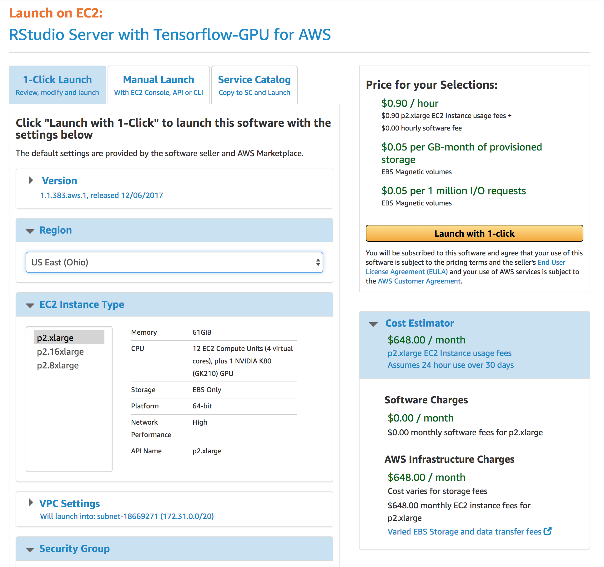
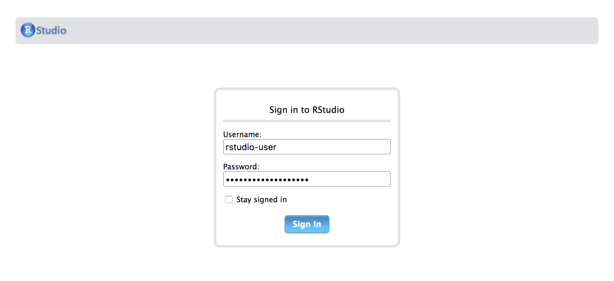
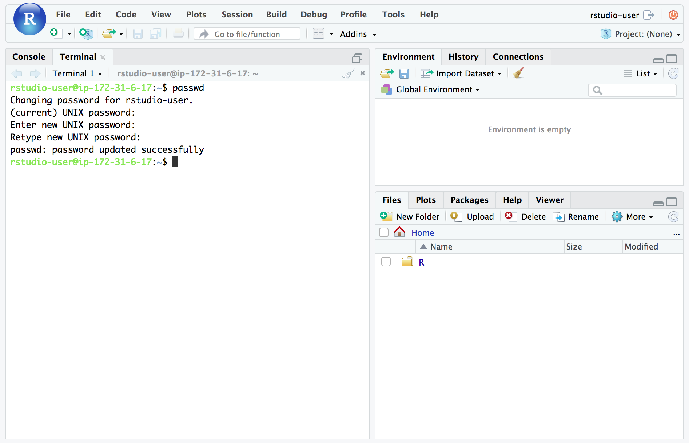
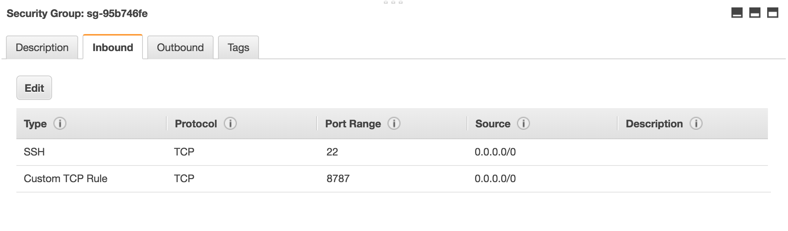
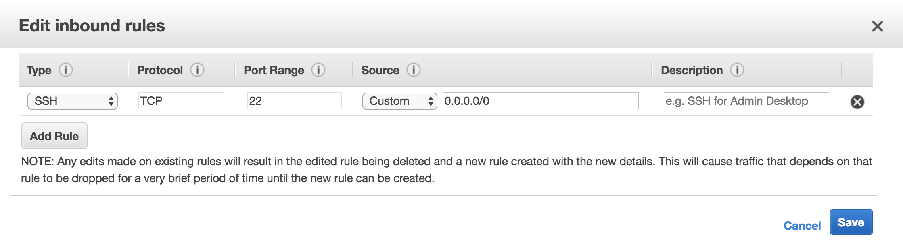

Cloud server instances with GPUs are available from services like Amazon EC2 and Google Compute Engine. You can use RStudio Server on these instances, making the development experience nearly identical to working locally.
RStudio has AWS Marketplace offerings that are designed to provide stable, secure, and high performance execution environments for deep learning applications running on Amazon EC2. The tensorflow, tfestimators, and keras R packages (along with their pre-requisites, including the GPU version of TensorFlow) are installed as part of the image.
There are AMIs on the Amazon Cloud Marketplace for both the open-source and Professional versions of RStudio Server. You can find them here:
Open Source: https://aws.amazon.com/marketplace/pp/B0785SXYB2
Professional: https://aws.amazon.com/marketplace/pp/B07B8G3FZP
You should launch these AMIs on the p2.xlarge instance type. This type includes a single GPU whereas other GPU-based images include up to 16 GPUs (however they are commensurately much more expensive). Note that you may need to select a different region than your default to be able to launch p2.xlarge instances (for example, selecting “US East (Ohio)” rather than “US East (N Virginia)”).

After you’ve launched the server you can access an instance of RStudio Server running on port 8787. For example:
http://ec2-18-217-204-43.us-east-2.compute.amazonaws.com:8787
Note that the above server address needs to be substituted for the public IP of the server you launched, which you can find in the EC2 Dashboard.
The first time you access the server you will be presented with a login screen:

Login with user id “rstudio-user” and password the instance ID of your AWS server (for example “i-0a8ea329c18892dfa”, your specific ID is available via the EC2 dashboard).
Then, use the RStudio Terminal to change the default password using the passwd utility:

Your EC2 deep learning instance is now ready to use (the tensorflow, tfestimators, and keras R packages along with their pre-requisites, including the GPU version of TensorFlow, are installed as part of the image).
See the sections below for discussion of various ways in which you can make your EC2 instance more secure.
The EC2 instance is by default configured to allow access to SSH and HTTP traffic from all IP addresses on the internet, whereas it would be more desirable to restrict this to IP addresses that you know you will access the server from (this can however be challenging if you plan on accessing the server from a variety of public networks).
You can see these settings in the Security Group of your EC2 instance:

Edit the Source for the SSH and HTTP protocols to limit access to specific blocks of IP addresses.
By default the EC2 instance which you launched is accessed over HTTP, a non-encrypted channel. This means that data transmitted to the instance (including your username and password) can potentially be compromised during transmission.
There are many ways to add HTTPS support to a server including AWS Elastic Load Balancing, CloudFlare SSL, and setting up reverse proxy from an Nginx or Apache web server configured with SSL support.
The details of adding HTTPS support to your server are beyond the scope of this article (see the links above to learn more). An alternative to this is to prohibit external HTTP connections entirely and access the server over an SSH Tunnel, this option is covered in the next section.
Using an SSH Tunnel to access your EC2 instance provides a number of benefits, including:
Use of the SSH authentication protocol to identify and authorize remote users
Encrypting traffic that would otherwise be sent in the clear
Note that SSH tunnel access as described below works only for Linux and OS X clients.
To use an SSH Tunnel with your EC2 instance, first configure the Security Group of your instance to only accept SSH traffic (removing any HTTP entry that existed previously):

Note that you may also want to restrict the Source of SSH traffic to the specific block of IP addresses you plan to access the server from.
Next, connect to your instance over SSH (click the Connect button in the EC2 console for instructions specific to your server):
Note that if you copied and pasted the command from the EC2 console you may see this error message:
Please login as the user "ubuntu" rather than the user "root".In that case be sure that you use ubuntu@my-ec2-server-address rather than root@my-ec2-server-address.
Execute the following commands to configure RStudio Server to only accept local connections:
You should now be able to connect to the server via SSH tunnel as follows:
(where my-security-key.pem and my-ec2-server-address are specific to your server configuration).
Once the SSH connection is established, RStudio Server will be available at http://localhost:8787/